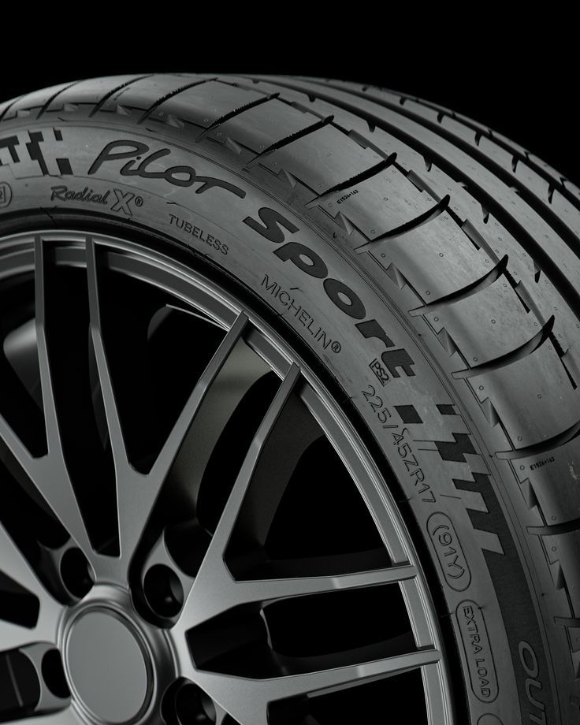
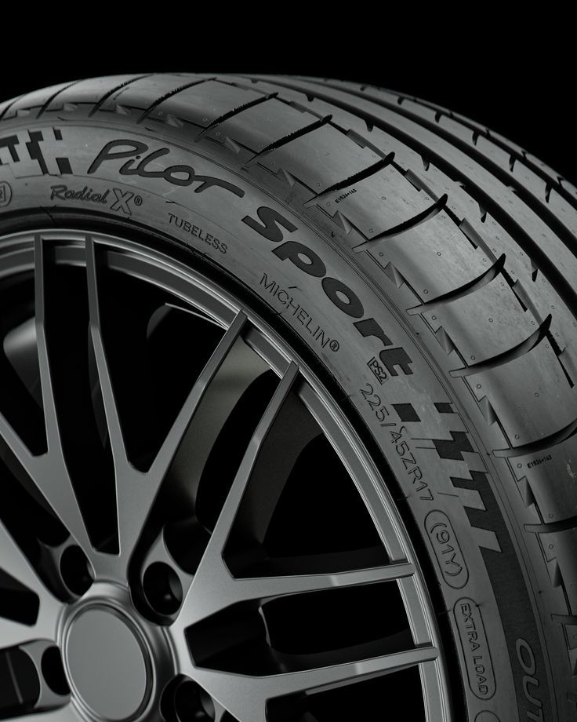
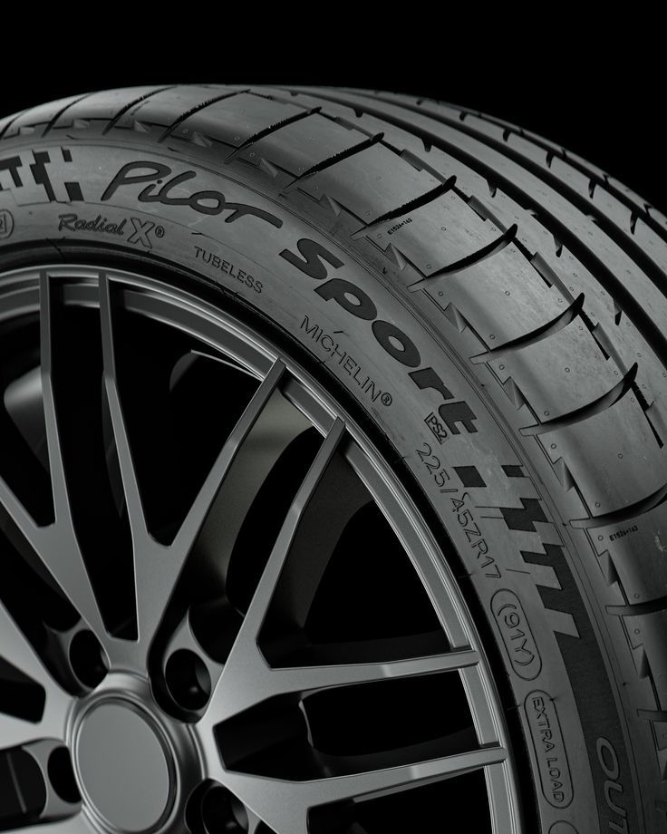

En Neumaticos Bynnon, entendemos la importancia de tener los neumáticos adecuados para maximizar el rendimiento, la seguridad y la comodidad en la carretera. Por eso, trabajamos con los principales fabricantes de neumáticos para ofrecerte una variedad de marcas reconocidas y confiables. Ya sea que estés buscando neumáticos para uso diario, para condiciones de invierno, neumáticos deportivos de alto rendimiento o neumáticos todoterreno resistentes, tenemos opciones para todos los estilos de conducción y necesidades específicas del vehículo.
